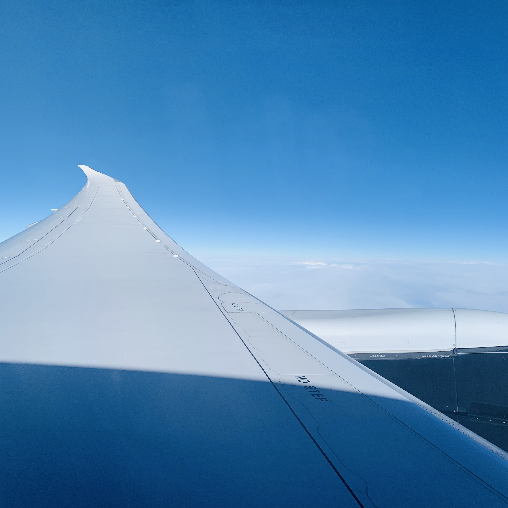

- Working HOLIDAY
- Skiing
- Nature of CANADA
mom
dad
yonger brother
Starting
안녕하세요 모두!!><
2021.11.15 월요일 강원도 강릉시에 살고있는 아버지 오명동 어머니 김은희의 아들이자 동생 오상임의 형인 오상우는 장장 1년 동안의 캐나다 워킹 홀리데이를 시작하였습니다. 앞으로 펼쳐질 저의 파란 만장한 캐나다 여행!! 많이 기대해 주세요.

시작.
여행이 시작되었습니다. 코로나 탓에 강릉-인천공항 버스가 없어지는 바람에 무거운 짐들을 들고 ktx를 타고, 공항 철도를 거쳐 드디어 인천공항에 도착했습니다. 그리고 에어 캐나다 비행기를 타고 밴쿠버로 향했는데요, 그 때 까지만 해도 내가 정말
가는 건가?? 진짜?? 라며 현실 부정을 하고 실감이 나지 않는 순간의 연속이었습니다. 구름이 걷히고 헤비 레인이 내리고 있는 밴쿠버 시내가 창 밖으로 보였을 때, 그제서야 실감이 나더군요ㅎㅎ.